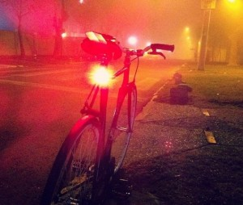
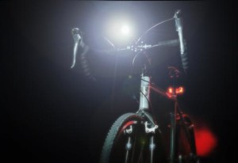
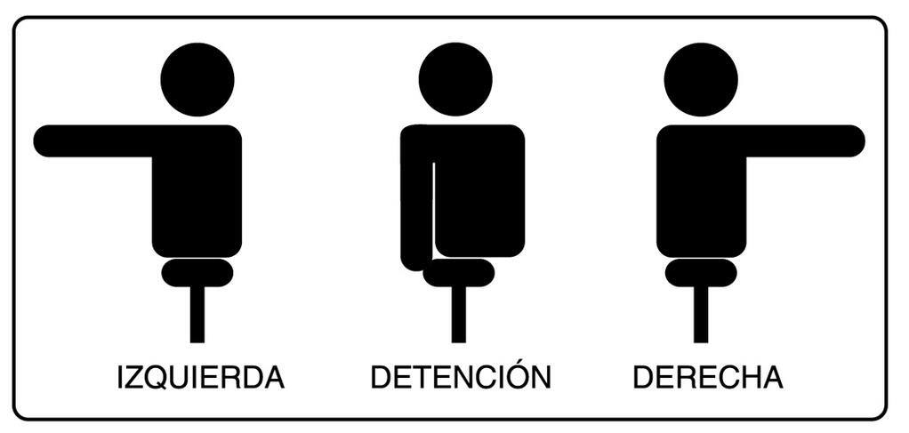
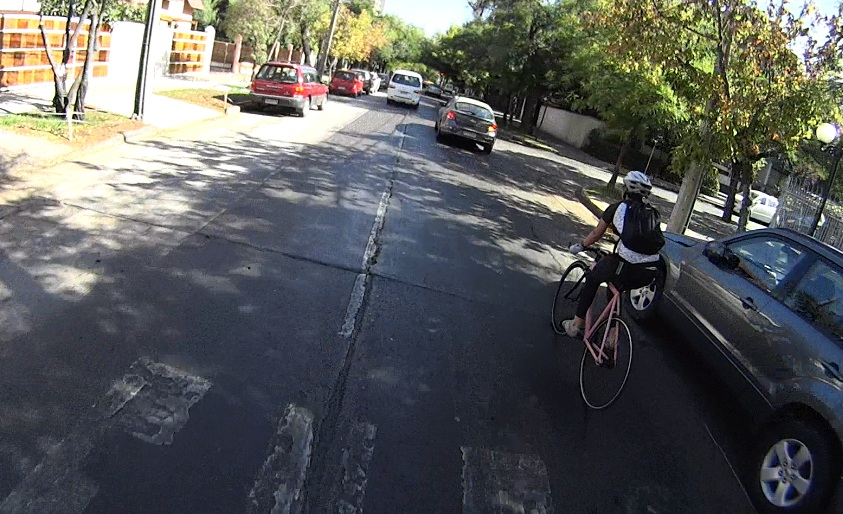

Pedalear por la calle es un derecho y un deber. La actual Ley de Tránsito chilena es clara: identifica a la bicicleta como un vehículo, y el lugar de la vía designado para su circulación es la calzada (la calle).
Para quienes comienzan a usar la bicicleta como medio de transporte, la calle puede ser una zona de peligro. Convivir con micros de 15 metros y 20 toneladas, o con autos que no respetan la velocidad, los semáforos o las distancias de adelantamiento, es una acción riesgosa. Los que llevamos algún tiempo pedaleando por la ciudad sabemos que las situaciones de conflicto no son tantas como pensábamos y que, con práctica y algo de sentido común, nuestro traslado en bicicleta puede ser simple, agradable y seguro.
Para bajar de la vereda a la calle, lo primero es tener las ganas de hacerlo. Debes informarte bien cómo hacerlo y lo demás te lo dará la propia experiencia.
Reglas de oro: ¡hazte predecible y visible!


Sobre todo en la noche, usa ropa con colores brillantes y cintas reflectantes, además de luces en la bicicleta: blanca adelante y roja atrás. La normativa vigente menciona “luces fijas”, pero las intermitentes llaman mucho más la atención. Si puedes, usa dos: una fija y una destellante.
Las luces deben ser el accesorio más importante a la hora de circular: le indican al resto de los usuarios de las vías que estamos ahí, y que nos acercamos o alejamos.
La comunicación es esencial
Es más fácil la convivencia cuando conocemos la intención del resto. Indica que cambiarás de pista o virarás en la siguiente esquina.
La ley de tránsito y el sentido común indican que los ciclistas podemos y debemos señalizar con el brazo extendido del lado que corresponda. Practica la maniobra. También recuerda que usar audífonos puede disminuir tu capacidad de escuchar lo que sucede a tu alrededor. Lo ideal es pedalear con tus 5 sentidos atentos a las condiciones de la vía. La buena convivencia comienza por uno mismo: hazte visible, predecible y respeta a los demás.

Elige una ruta adecuada
- Siempre debes tener claro qué calles usarás. Lo más simple es usar una plataforma como Google Maps, con ciclovías y puntos de interés.
- Elige calles sin micros. El gran tamaño de los buses del transporte público genera puntos ciegos, además de conductores algo estresados y preocupados de recoger y dejar pasajeros.
- Las ‘vías exclusivas’ son eso: exclusivas. Evítalas. Si no puedes encontrar una alternativa a una calle así (Alameda, Providencia, etc.), según Carabineros puedes usar la pista de la izquierda, apegado al bandejón central.
- En la noche usa calles bien iluminadas: los hoyos y obstáculos en la calzada pueden ser invisibles con poca luz.
Usa la calle o ciclovía. Si no tienes opción, bájate y camina en la vereda con la bici al lado. Al pedalear por la vereda pones en riesgo a peatones, en especial a niños y personas de la tercera edad que pueden no oírte venir; además te invisibilizas y sales del campo visual de quienes conducen por la calle y se encuentran contigo en cada esquina. La vereda es lenta y peligrosa. Usa siempre calles y ciclovías.
Circula siempre en el sentido del tránsito. ¡No seas “ciclista salmón”! Al llegar a una esquina, nadie espera que vengas en contra del sentido. No te expongas a ti ni a los demás a un accidente.
En las esquinas, ponte adelante, así te haces visible para los demás conductores al momento de reanudar el tránsito. Evita esperar la verde al lado de un auto; menos al lado de un camión o vehículo grande, porque al virar pueden no verte. Ten mucha precaución con autos que viran sin señalizar o lo hacen en segunda fila: intenta hacer contacto visual o mirar las ruedas delanteras.
Nunca te confíes de tu preferencia en esquinas con Disco Pare o Ceda el Paso. Llega siempre con máxima atención y los dedos en los frenos.
Precaución con los autos estacionados, que podrían abrir una puerta de improviso. Lo mismo con taxis que se detienen a buscar o dejar pasajeros.
Circula a no menos de 50 cm de la cuneta, ya que puedes encontrarte con rejillas colectoras de aguas lluvia y basura, incluidos vidrios o clavos que podrían pinchar un neumático. La ley establece que nos deben adelantar a 1,5 m de distancia; circular en la orilla permite que otros vehículos nos sobrepasen con muy poca distancia, generando riesgos de caídas y atropellos.
Si te suena el teléfono, detente. Necesitas máxima atención a tu entorno para moverte con seguridad. Una llamada o un mensaje deben ser atendidos cuando te detengas. Evita el uso de audífonos.
Para llevar tus cosas usa una parrilla o mochila. Un canasto en la parte delantera ofrece comodidad y visibilidad de la carga, pero puede desestabilizar la bici por el peso sobre la rueda delantera.
Usa un buen candado. No muchos lugares tienen espacio para estacionar la bicicleta bajo vigilancia. Es fundamental contar con un candado tipo “U” (u-lock) de buena marca, que permita dejar la bici anclada con seguridad en el espacio público. En las tiendas pueden recomendarte la mejor alternativa.
Usa casco con alguna certificación europea o estadounidense, bien puesto y firme. En Chile su uso es obligatorio en zonas urbanas.
Usa ropa en capas y ten una muda disponible por si el sudor o la lluvia te juegan una mala pasada. Con el paso del tiempo, el cuerpo se acostumbra al pedaleo y el sudor disminuye.
Ten tu bicicleta en buen estado. Que no te fallen los frenos en un mal momento o se trabe la cadena en alguna pendiente.
Nunca está de más un kit de parches o una cámara de repuesto. El problema más común entre ciclistas es pinchar, por espinas, vidrios, suciedad, mal inflado de las ruedas o caer a un hoyo.

Texto original de Pedalea X la Calle, conservado en este archivo histórico.